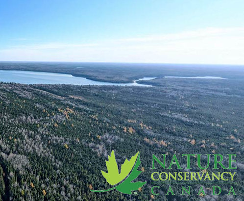

Protected areas are the cornerstone of biodiversity conservation; they maintain key habitats, provide refugia, allow for species migration and movement, and ensure the maintenance of natural processes across the landscape. Not only do protected areas secure biodiversity conservation, they also secure the well-being of humanity itself. Protected areas provide livelihoods for nearly 1.1 billion people, are the primary source of drinking water for over a third of the world's largest cities and are a major factor in ensuring global food security. Well managed protected areas harbouring participatory and equitable governance mechanisms yield significant benefits far beyond their boundaries, which can be translated into cumulative advantages across a national economy and contribute to poverty reduction and sustainable development including achievement of the Millennium Development Goals. As the detrimental impact of climate change threatens the planet, protected areas provide a convenient solution to an inconvenient truth. Better managed, better connected, better governed and better financed protected areas are recognized as the key to both mitigation and adaptation responses to climate change.
There are six websites which cover about environment issues below:
- Greenpeace internacional website
- Nature Conservancy website
- Toronto Environment Alliance Webpage
- Oncafari Webpage
- Sea Sheperd Webpage
- SEAE Website
Greenpeace International
We want to live on a healthy, peaceful planet. A planet where forests flourish, oceans are full of life and where once-threatened animals safely roam. Where our quality of life is measured in relationships, not things. Where our food is delicious, nutritious, and grown with love. Where the air we breathe is fresh and clear. Where our energy is as clean as a mountain stream. Where everyone has the security, dignity and joy we all deserve. It's all possible. We can't make it happen alone, but have no doubt: We can do it together.
Nature Conservancy Canada
With nature, we build a thriving world. The interconnection of people and nature is the Nature Conservancy of Canada's (NCC's) foundation; the idea that we are all one with nature. Together, through purposeful actions, we have the opportunity to build toward a greater good — a thriving world. Because when nature thrives, people thrive.
Toronto Environmental Alliance
For over 30 years, the Toronto Environmental Alliance has campaigned locally to find solutions to Toronto's urban environmental problems. As a not-for-profit organization, we advocate on behalf of all Torontonians for a green, healthy and equitable city. We rely on our supporters to help us work with communities and we act as an environmental watchdog at City Hall.
Oncafari
Since 2011, we have collected data and assembled information to grasp a better understanding on jaguar behavior, as well as discover better conservation strategies for the biggest feline of the Americas.
Seasheperd Conservation society
Sea Shepherd's sole mission is to protect and conserve the world's oceans and marine wildlife. We work to defend all marine wildlife, from whales and dolphins, to sharks and rays, to fish and krill, without exception.
SEAE Embu
Our mission is to stimulate and expand the processes of socio-environmental, cultural and economic transformation, through participatory and inclusive educational processes, encouraging action in public policies, aiming at the conservation, recovery and defense of the environment.